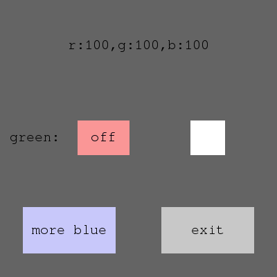
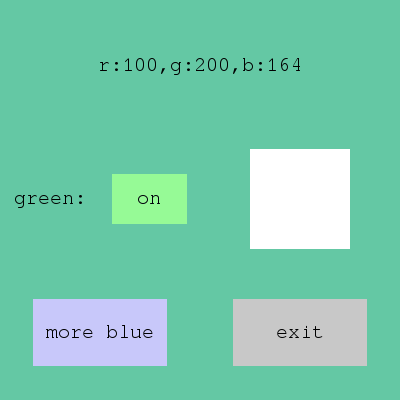

Introduction to libtoys
libtoys demonstrates an idea of micro widgets, which are simplest possible UI widgets doing exactly one things and nothing more. As an example following main micro widgets are provided by the libtoys library:
- tx - text, e.g.
tx("hello", calibriFont, rgba{0,0,0,255}) - rc - rectangle, e.g.
rc(black) - sz - determines the size of the enclosed micro widget, e.g.
sz(xy(50, 50),rc(black)) - lr, ud, fb - splits area in either x, y or z dimension. e.g.
lr(rc(red), rc(blue))has red left half and blue right half. - lay - positions a toy in a relative or absolute coordinate.
e.g.
lay(xy(0.5,0.5),tx("middle",f, c)) - on_click - triggers even for a click hitting the widget region.
e.g.
on_click([](click&){exit()},tx("click to exit",f,c))
As an example, these widgets can be combined to create a button (code is C++14):
auto quit =
sz(xy(100, 25), // 1. set size
on_click([](click&){ system::exit(0); }, // 2. exit on click
fb(lay(mid, tx("exit", f, black)), // 3. text on front middle
rc(rgba{200, 200, 200,0}))); // 4. rectangle background
Design and capabilities
While libtoys is a proof of concept and simply lacks maturity to support real development, the basic design combines many ideas and values that can be considered valuable. The leading idea behind libtoys is minimalism and it follows strictly the UNIX idea that the system should consist of minimalistic tools doing one orthogonal thing right, and the power should raise from the way the components are combined. The extreme minimalism brings many benefits:
- Small learning overhead. libtoys contains less than dozen extremely simple primitives and while it the number will undoubtedly grow, the library should remain relatively simple & small.
- The small base of simple but powerful items is easy master. This easiness to master comprehend the powerful tool set is expected to make the programming more productive and efficient.
Also often the abstract technical primitives are forever (e.g. BSD sockets), while more specific services tend to not fully fulfil the wavering application needs. E.g bigger applications (and especially games) may rely almost entirely on custom components. libtoys does not even try to provide ready-to-use widgets, but merely provides a tool set for making your own.
Other design goals of libtoys are:
- Generality. libtoys can be used to layout and draw 'text' (as demonstrated in unit test cases) and to treat normal 2D graphics (as demonstrated by the OpenSDL usage). E.g. it should possible to port the toys to work with libcurses.
- Declarativeness. This reduces redundancy, bugs and needed effort.
- Statelessness. All micro widgets are stateless. The statelessness reduces the complexity by lot and eliminates classes of bugs. Statelessness also allows reuse of widget instances.
- Terseness. Composing widget from micro widgets can be done inline with few lines of code. Class definitions or explicit memory management are not required.
- Minimized overhead.
- It is accepted that a traditional widget may consist of dozens of even hundreds of microwidgets. This traditional could mean e.g. hundreds of heap allocations meaning huge overhead over a flat design.
- This overhead is avoided by composing the micro widgets compile-time with template magic (enabled by C++14. This allows flattening deep micro widget structure into a single C++ template class. E.g. the 7 microwidget button in previous example has sizeof(quit) 96 bytes and can be entirely allocated in stack meaning 0 heap usage and lighting speed.
- This compile-time composition should also flatten and inline the generated template code making the single highly optimized and flat draw & layouting routines for single widget instead of generating routines for all dozens of specialized microwidgets.
The expectation is that the simplicity, declarativeness, statelessness and terseness improve productivity. Also providing technical primitives instead of high level services/policy typically means that the framework won't get in your way. This reflects my own experience of having worked with similar UI kit I created for Java.
Of course: you cannot get that much done with the library yet, as it is incomplete. Also solution has its issues like verbose errors for mistakes (because heavy template usage) and there may be potential for badly scaling layouting calculations, because lack of states (all thought compiler may optimize recalculations out when widgets are composed compile-time via templates and the problem can anyway be solved by adding stateful 'cache' microwidgets in deep microwidget structures.). There are also likely bugs and design issues, because library's young age.
Code sample & screenshot:
Here's a bigger code sample demonstrating the toolkit. Following example demonstrates...
- ...writing a simple interactive UI...
- ...with a manipulated state (variable c) and a dynamic property (rgbtext) that changes when c is modified
- ...and how to encapsulate compile-time composed widgets in separate modules via itoy interface and how to use the encapsulated widgets.
#include "toys/sdl.h"
#include <sstream>
using namespace std;
using namespace toys;
using namespace toys::sdl;
using namespace toys::sdl::vals;
unique_ptr<itoy> make_radio_button(const font& f, const function<void (bool)>& changed);
unique_ptr<itoy> make_resizing_item();
int main(int argc, char** argv) {
// set up infra. sdltoys constructor initializes SDL
sdltoys i;
font f("/usr/share/fonts/truetype/freefont/FreeMono.ttf", 20);
// data used by widgets
const rgba black{0, 0, 0, 0}; // this is immutable
rgba c{100, 100, 100, 0}; // this is mutable state used by reference
auto rgbtxt = prop([&c]() { // this is dynamic state produced by lambda
std::ostringstream buf;
buf<<"r:"<<int(c.r)<<",g:"<<int(c.g)<<",b:"<<int(c.b);
return buf.str();
});
auto radio = make_radio_button(f, [&c](bool v) { c.g = (v?200:100); });
auto titledradio = lr(0.5, lay(mid, tx("green:", f, black)), lay(mid, radio.get()));
auto resizing = make_resizing_item();
auto text = lay(mid, tx(rgbtxt, f, black));
auto moreblue = on_click([&c](click&){c.b+=32; },
fb(lay(mid, tx("more blue", f, black)), rc(rgba{200,200,250,0})));
auto quit = on_click([](click&){ system::exit(0); },
fb(lay(mid, tx("exit", f, black)), rc(rgba{200, 200, 200,0})));
auto z = fb(ud(0.33,
text,
ud(0.5,
lr(0.5, titledradio, lay(mid, resizing.get())),
lr(0.5, lay(mid, sz(xy(0.67, 0.5), moreblue)),
lay(mid, sz(xy(0.67, 0.5), quit))))),
rc(std::ref(c)));
window<decltype(z)&> wnd("foo", vec(), {400, 400}, z);
return i.run(&wnd);
}
Functions make_radio_button and make_resizing are defined in a separate file. They demonstrate two different ways how micro widgets can be composed in encapsulated way that hides the internal types and implementations (as you probably don't want to define complex template instances in your shared headers). The first way sets up everything in a single function body so that widget state is split into several heap blocks, while the second builds widget in single heap area, but it requires an additional class and some boilerplate code.
The essential interface for encapsulation is the itoy class that has 3 methods that are a) size, b) draw and c) recv. owned_itoy or shared_itoy functions can be used to wrap a compile-time composed widget inside itoy interface or class can implement the interface directly as done in resizing_item class.
#include "toys/sdl.h"
#include <functional>
using namespace toys::sdl::vals;
using namespace toys::sdl;
using namespace toys;
using namespace std;
// following widget does not require separate class definition, but its state gets allocated in heap
unique_ptr<itoy> make_radio_button(const font& f, const function<void (bool)>& changed) {
shared_ptr<bool> state(new bool(false));
rgba black{0, 0, 10, 0};
shared_ptr<itoy> on = shared_itoy(fb(lay(mid, tx("on", f, black)), rc(rgba{150, 250, 150, 0})));
shared_ptr<itoy> off = shared_itoy(fb(lay(mid, tx("off", f, black)), rc(rgba{250, 150, 150, 0})));
return
owned_itoy(
sz(xy(75, 50),
on_click([state, changed](click&) {*state = !*state; changed(*state);},
prop([state, &f, on, off, black] () {
return *state ? on.get() : off.get();
}))));
}
// composing a stateful and flat (not split into several memory blocks) widget from stateless
// microwidgets is possible, if a bit clumsy.
auto make_resizing_toy(vec* v) {
return on_click([v](click& c){*v = (v->x() == 50) ? vec(100, 100) :vec(50,50); },
sz([v](vec){return *v;}, rc(rgba{255, 255, 255, 0})));
}
class resizing_item : public itoy {
private:
vec sz_;
decltype(make_resizing_toy(0)) toy_;
public:
resizing_item() : sz_(50, 50), toy_(make_resizing_toy(&sz_)) {}
vec size(const vec& size) const { return toy_->size(size); };
void draw(const vec& size, graphics_type& i) const { return toy_->draw(size, i); }
bool recv(const vec& size, ievent& e) { return toy_->recv(size, e); }
};
unique_ptr<itoy> make_resizing_item() {
return unique_ptr<itoy>(new resizing_item());
}
The result of the code is a simple UI with 4 widgets that can be clicked and 4 items with dynamic properties (resizing widget, radio button changes appearance, rgb text updates, background color changes).
When application launches, it looks following:

After clicking resizing button, putting radio widget on and clicking 'more blue' button the widget looks following:

Author
I (Antti Rauhala) am a software engineer and data scientist at Futurice, who has a background in systems programming, mobile, machine learning and search. My previous projects are freeform (freeform.sourceforge.net) meta language and re-expression method (libreexp.github.com) that is a new kind of representation learning method.